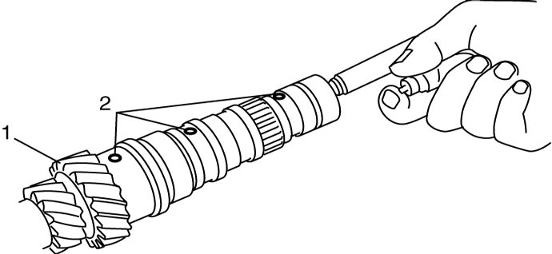

5B
| Input Shaft Inspection |
•Check input shaft for damage and excessive wear, and replace if necessary.
•To ensure lubrication of input shaft (1), blow air into oil holes (2) and check that they are free from any obstruction.

•To ensure lubrication of input shaft (1), blow air into oil holes (2) and check that they are free from any obstruction.

 "Expand image")